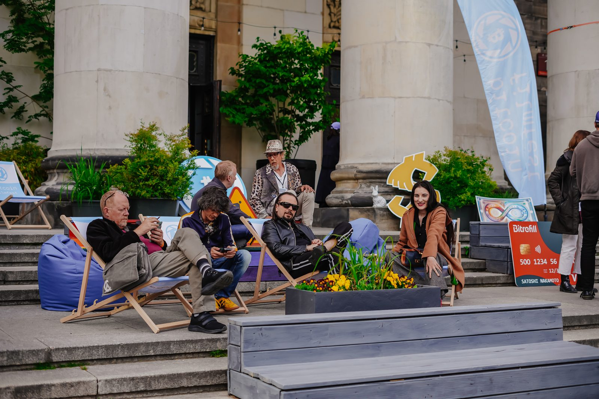
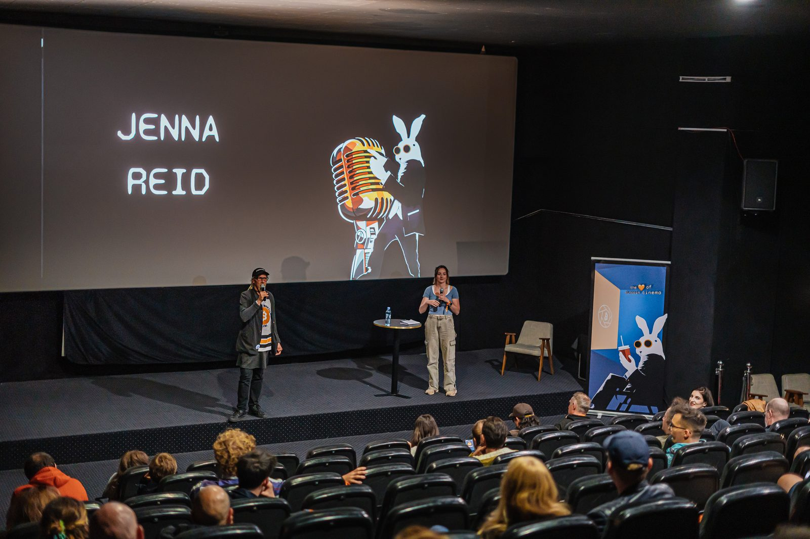

At a glance
The festival in brief
Bitcoin FilmFest is the largest film festival dedicated to Bitcoin culture. Founded in Warsaw in November 2022, it is a grassroots, community-driven gathering that brings filmmakers, artists, technologists and curious newcomers together around stories of money, freedom and the future. BFF'26 is the fourth edition.
It is not a conference with films bolted on — it is a cultural event built around cinema. The programme spans feature documentaries, dramas, comedies, shorts and AI-assisted films, alongside workshops, panels, a Community Stage shared with MoneroKon, an AI short-film contest with a 2.5M-sat prize pool, art exhibitions, live music, and daily social events. The festival's own awards, the Golden Rabbits, are presented at a closing gala. The team often describes BFF less as a film festival than as a festival of Bitcoin culture that happens to be built around cinema.
BFF also runs year-round: media, a newsletter, community channels, and "mini" satellite events. It has staged minis in Lisbon, Cape Town, San Salvador and Lugano.
Origin story
BFF grew out of the Polish "21bitcoin" maxi community. The filmmaker Pierre Corbin was visiting Warsaw and wanted to screen his film The Great Reset and the Rise of Bitcoin. The screening fell through — so he and Tomek Kolodziejczuk grabbed two beers and started talking. The realisation over those beers: there is more than one Bitcoin film out there; why not make an event that screens several and picks the best?
The first BFF ran as a side event to Weekend of Capitalism: 120 people, eight films, all documentaries. It went better than anyone anticipated, and they kept going year after year.

What "Bitcoin Cinema" means
The most-asked question. The team's working answer has three layers:
- Films about Bitcoin — documentaries on inflation, self-custody, circular economies, the Satoshi mystery.
- Films where Bitcoin is part of the plot — a romance, comedy, drama or crime story where Bitcoin matters to what happens, though the film is really about love, family or revenge.
- Films within the Bitcoin ethos — works that never mention Bitcoin but share its values (self-actualisation, independence, an anti-systemic worldview), e.g. The Matrix, The Truman Show.
Beyond the films: cinema as an industry is slowly integrating with Bitcoin — films financed in sats, distributed and crowdfunded on Bitcoin platforms. The team's vocabulary: Bitcoin Cinema is the ecosystem; a Bitcoin film is the individual work; Bitcoin in cinema is the appearance of Bitcoin inside mainstream film. "We don't create the category — we discover it, shape it, every year."
The 2026 edition — what's new
- MoneroKon co-location — same venue, same dates; one ticket covers both events.
- AI Contest "Future of Money" — an AI short-film competition with a 2.5M-sat prize pool, audience-voted, announced at the closing gala. Paired with on-site AI filmmaking workshops.
- A bigger, looser lineup — 21 titles (18 in the cinema + 3 VOD-only), leaning toward small independent creators; every cinema title also goes to VOD via partner IndeeHub. Ticket holders are emailed VOD access; the library carries 20+ titles beyond the cinema programme, including films from past editions.
- Three stages — film stage, community stage, Monero stage.
- Trezor for every ticket — each ticket buyer receives a Trezor Model T hardware wallet.
Films to watch: Self Custody (a 31-min Hollywood action-thriller having its European premiere at BFF — Bitcoin-focused, with Adrian Grenier), the short comedies Bitcoin Castle and Crypto Castle, the feature documentary Hummingbird — The Bitcoin Jungle Story on the Costa Rica circular economy, and Bitcoin Motorcycle Diaries — a Bitcoin Video Magazine 'videozine' with a short on-stage chapter at the festival.
Programme & a day at BFF
Three days of programme plus a Day 0 before-party with live music. Each day: roughly five hours of screenings (features, shorts, panels) and around four hours outside the cinema. The rhythm — morning breakfast and workshops, afternoon screenings, evening after-party, an after-after most nights. Sunday closes with a gala where the AI Contest result and Audience Choice are announced.
Side events: yoga, Bitcoin Run, Bitcoin Walk, Warsaw city tours, a shooting range, and a visit to the Photoplastikon — Warsaw's museum of antique cinematography. The festival also features painters, photographers, book authors and musicians, not only filmmakers.
Discussion panels (2026 topics): whether public funding helps culture and cinema; the state of independent cinema; how AI is revolutionising filmmaking — with more to be announced.

Golden Rabbits & jury
The festival's own awards, presented at the Sunday closing gala. Four categories: Best Film, Best Short, Best Story, Audience Choice. The trophy is an abstraction of rabbit ears — white, sprinkled with gold glitter. "It's the only award specific to Bitcoin Cinema," the team says; winners add the BFF laurels to their posters and trailers.
2026 jury: Brad Mills, Valerie B., Terence Michael, Pierre Corbin, Avi Burra, Tomek Kolodziejczuk.
Past winners
- BFF'24 — Best Film: Dirty Coin · Best Story: Searching for Satoshi · Best Short: HodL · Audience Choice: My Trust In You Is Broken.
- BFF'25 — Best Film: No More Inflation · Best Short: Satoshi, the Creation of Bitcoin (Artur Machado) · Best Story: Hotel Bitcoin (Manuel Sanabria & Carlos Villaverde).

MoneroKon
MoneroKon travels to a different city each year; 2026 puts it in Warsaw, co-located with BFF — same venue, same dates, synergic agendas, shared social events. A BFF ticket gets you into MoneroKon and vice versa. MoneroKon is a technical conference on private, decentralised, permissionless money; roughly half its programme touches Bitcoin directly. Bitcoin FilmFest itself stays a Bitcoin-only event — the co-location is about overlapping audiences, not blended branding.
Tickets
One general ticket: €120, paid in Bitcoin (on-chain or Lightning) — sold at bitcoinfilmfest.com/bff26 and via the Kinoteka cinema website (kinoteca.pl). Free Artist and Volunteer passes are available. The ticket covers full festival access, after-parties and social events, plus post-festival VOD — and comes with goodie bags and sponsor merch worth more than the ticket price, this year including a Trezor Model T hardware wallet for every buyer.
The team & friends
Founders: Tomek Kolodziejczuk and Pierre Corbin. Tomek is a professional libertarian activist who has promoted Bitcoin in the Polish community for over five years — organising Poland's maxi meetups and community, running conferences and translating books. Crucial team members: Kasia Szczypska, Selale Malkacoglu, Blazej Szkudlarek, Florina Mahalean, Nomishka Dilshan. Volunteers are, in the team's words, "the real power of the festival."
BFF deliberately calls its sponsors friends — no booths, no expos, no big mining-company branding. It is a deliberately low-budget, grassroots festival, funded mostly by these friends. Named with thanks: the Polish Bitcoin Association, Cashify and Satsback.
Past editions — proof points
- BFF'24: premiere of a Carl Menger biopic; Gods of Their Own Religion; Dirty Coin (dir. Alana Mediavilla); and a Bitcoin laser projection on the Palace of Culture after block 840,000, which drew international press.
- The 2024 halving block was mined during the festival, right after a screening of Gods of Their Own Religion — the room counted it down together.
- BFF'25: 200+ guests from 20+ countries; AI films, Bitcoin-themed commercials, a Movie Pitch Contest, creator meetups.
- Films per edition, a steady climb: 1st — 8 · 2nd — 12 · 3rd — 10 · 4th (2026) — 16.
The mission
"You cannot fix the world only with technology. We need to work on culture in parallel." Bitcoin won't be adopted through better wallets or legal frameworks alone — there has to be a cultural shift toward freedom, independence, honesty and voluntary collaboration. "The world's problems have a root cause. We need to fight the cause, not the symptoms." BFF is about cultural evolution and the significance of the Bitcoin subculture. It is not about investment or money — it is about a freedom revolution. There is no ideal attendee: the festival welcomes technologists, artists, families, hardcore Bitcoiners and complete beginners alike.
Quotable lines (attributable to Tomek Kolodziejczuk unless noted)
- "We don't create the category. We discover it, we shape it, every year."
- "You can't fix the world with technology alone. You have to work on the culture in parallel."
- "Bitcoiners don't only exist in front of screens. We're a network of friends. Come and feel that you're not alone."
- "The festival is for you even if you think it isn't."
- "Everyone is important at our event" — on why BFF has no VIPs.
- "It's not about investment, it's not about money. It's about a freedom revolution."
- "It's already newsworthy that a film festival like this is in Poland — Warsaw should be proud of it."
Testimonials
Patryk (BFF'25 attendee): "I came for two films and stayed for four days. By Sunday I had three new collaborators and a list of movies I'd never have found on my own. It's the only festival where the conversation in the lobby is as good as what's on screen."
Ernesto (BFF'25 attendee): "I flew in not really knowing what 'Bitcoin cinema' meant. I left understanding it — not because someone lectured me, but because I watched it, argued about it over beers, and danced to it at 2am. That's the trick of this place."
Contact & assets
Press contact: hello@bitcoinfilmfest.com
Festival page: bitcoinfilmfest.com/26
Logos & laurels: bitcoinfilmfest.com/presskit
Telegram: BFF'26 chat · X: @bitcoinfilmfest · Nostr / LinkedIn via the festival page.
Ready-to-publish articles (EN & PL): What Is Bitcoin Cinema? · Four Days of Intensive Chill · "Fix the Money, Fix the Culture"